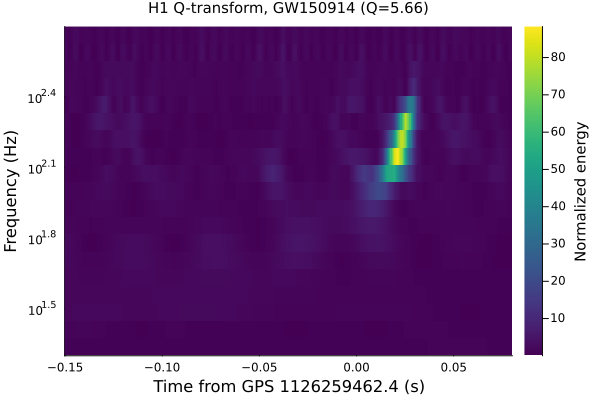

Q-transform
One of the most useful tools for visualizing short-duration features in a TimeSeries – a transient noise glitch, or a gravitational-wave signal – is the constant-Q transform. This is the "Q-scan", a staple of LIGO/Virgo detector characterization, and the algorithm behind the single most recognizable image in gravitational-wave astronomy: the upward-sweeping "chirp" track of GW150914, bottom panel of Figure 1 in Abbott et al. (2016), the discovery paper.
q_scan/q_transform/qscan_peak (src/GravitationalWaveData/QTransform.jl) implement the Omega-pipeline constant-Q transform (Chatterji 2005) with the same tiling, window and indexing conventions as other Omega-derived implementations. Both the individual tile computations and the full GW150914 peak read-out are numerically cross-checked (see the Conventions page).
using GravitationalWaveData
using Plots
gr()Plots.GRBackend()Fetching real strain data
The same standard 4096 s off-source segment covering GW150914 that the rest of this project's tutorials use, fetched live from GWOSC via fetch_open_data (cached locally under ~/.cache/gravitationalwavedata/strain, so re-running this tutorial doesn't re-download the file):
gps_start, gps_end = 1126256640, 1126260736
gps_merger = 1126259462.4 # GW150914 merger GPS time
path = fetch_open_data("H1", gps_start, gps_end)
strain, dq_mask = load_gwosc_strain(path)(TimeSeries{Float64}(16777216 samples, t0=1.12625664e9, dt=0.000244140625, duration=4096.0s, name="strain"), TimeSeries{UInt32}(4096 samples, t0=1.12625664e9, dt=1.0, duration=4096.0s, name="DQmask"))A Q-transform's cost grows with the input duration (more tiles per frequency row), and a full 4096-second scan is neither necessary nor how this is normally done – the standard approach is to crop to a short window around the time of interest first. 16 s centered on the merger is generous enough to resolve frequencies down into the detector's sensitive band while keeping the transform itself fast:
seg = crop(strain, gps_merger - 8.0, gps_merger + 8.0)
(duration(seg), sample_rate(seg))(16.0, 4096.0)Running the multi-Q search
q_transform FFTs the segment once (normalized_fft), then evaluates a whole family of "Q-planes" – one energy grid per Q value, densely log-spaced across qrange – and keeps only the plane containing the single loudest tile. We restrict frange to 20-500 Hz, which both speeds up the search (far fewer tile rows to compute) and matches aLIGO's most sensitive band; search restricts peak-finding (not the computed grid) to a window straddling the merger, so an unrelated loud tile elsewhere in the 16 s segment can't be mistaken for the signal.
scan, peak = q_transform(seg; frange=(20.0, 500.0),
search=(gps_merger - 0.2, gps_merger + 0.1))
peakQPeak(1.1262594624213867e9, 140.3125, 88.87990623881669, 13.332659617556933, 5.65685424949238)qscan_peak returns the loudest tile as a QPeak: its GPS time, frequency, normalized energy, snr = sqrt(2*energy), and the q of the plane it came from. The search picked out a tile a few tens of milliseconds after this catalogue time, at a Q close to the ~5.3 value independently reported for GW150914 in the literature – a good sanity check that the multi-Q search is doing something physically sensible, not just numerically self-consistent:
println("peak time - merger = $(round(peak.time - gps_merger; digits=4)) s")
println("peak frequency = $(round(peak.frequency; digits=1)) Hz")
println("peak Q = $(round(peak.q; digits=2))")
println("peak SNR = $(round(peak.snr; digits=2))")peak time - merger = 0.0214 s
peak frequency = 140.3 Hz
peak Q = 5.66
peak SNR = 13.33Plotting the time-frequency energy map
scan.rows holds the winning Q-plane's raw energy grid: one row per tile frequency, each with its own time resolution (rows at higher frequencies get finer time sampling – see QScan's docstring). Re-gridding onto a single regular time/frequency axis is a presentation step that doesn't change which tile is loudest or its energy/time/frequency, so the package leaves it to the caller. For this plot we only need something visual, so a short linear-interpolation helper (not part of the package – just enough for a heatmap) resamples every row onto one shared time grid around the merger:
function _lininterp(xs, ys, x)
x <= xs[1] && return ys[1]
x >= xs[end] && return ys[end]
i = searchsortedlast(xs, x)
x0, x1 = xs[i], xs[i + 1]
y0, y1 = ys[i], ys[i + 1]
return y0 + (y1 - y0) * (x - x0) / (x1 - x0)
end
function qscan_grid(scan, tlo, thi; ntime=400)
common_times = range(tlo, thi; length=ntime)
freqs = [row.frequency for row in scan.rows]
z = Array{Float64}(undef, length(scan.rows), ntime)
for (i, row) in enumerate(scan.rows)
n = length(row.energy)
row_times = row.t0 .+ row.dt .* (0:(n - 1))
z[i, :] .= [_lininterp(row_times, row.energy, t) for t in common_times]
end
return collect(common_times), freqs, z
end
grid_times, grid_freqs, energy_grid = qscan_grid(scan, gps_merger - 0.15, gps_merger + 0.08)
rel_times = grid_times .- gps_merger;Now the classic chirp plot: a heatmap of normalized energy against time (relative to merger) and log-scaled frequency:
heatmap(rel_times, grid_freqs, energy_grid;
xlabel="Time from GPS 1126259462.4 (s)", ylabel="Frequency (Hz)", yscale=:log10,
colorbar_title="Normalized energy", color=:viridis,
title="H1 Q-transform, GW150914 (Q=$(round(peak.q; digits=2)))")
The bright track sweeping upward through frequency, right at the merger time, is the gravitational-wave chirp – the same feature Figure 1 of Abbott et al. (2016) shows, produced here entirely with GravitationalWaveData.jl. The 12_gw150914_capstone tutorial builds on this together with bandpass/whiten (see 03_filtering_whitening) to reproduce that discovery-paper figure more fully.
This page was generated using Literate.jl.